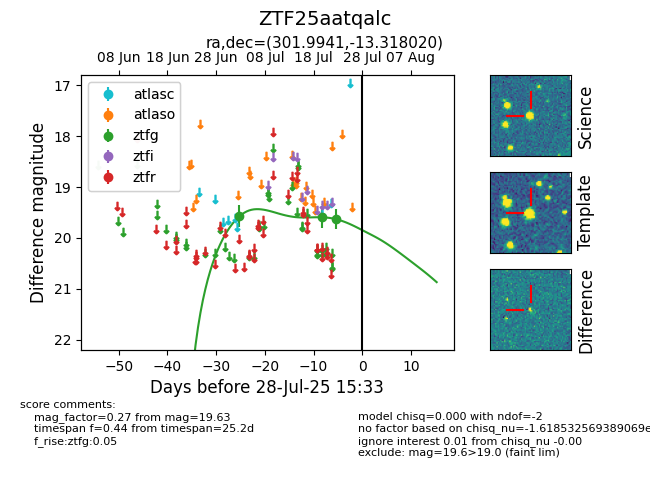

Target ZTF25aatqalc at 2025-07-28 15:33, see:
FINK: fink-portal.org/ZTF25aatqalc
Lasair: lasair-ztf.lsst.ac.uk/objects/ZTF25aatqalc
ALeRCE: alerce.online/object/ZTF25aatqalc
alt names
ZTF25aatqalc (ztf,fink)
coordinates:
equatorial (ra, dec) = (301.9941,-13.31802)
galactic (l, b) = (29.2247,-22.88736)
photometry
last ztfg=19.63
3 ztfg detections
